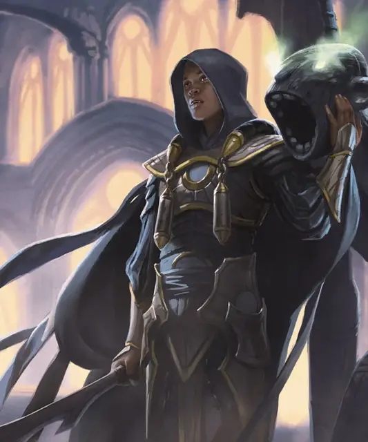

Вампир пьющий кровь
Blood Drinker Vampire
Средняя Нежить, законно-злая

Класс Доспеха 16 (природный доспех)
Хиты 90 (12к8 + 36)
Скорость 40 футов, летая 40 футов (парит)
| мод | спас | ||
|---|---|---|---|
| СИЛ | 16 | +3 | +3 |
| ЛОВ | 18 | +4 | +7 |
| ТЕЛ | 17 | +3 | +6 |
| мод | спас | ||
|---|---|---|---|
| ИНТ | 16 | +3 | +3 |
| МДР | 13 | +1 | +4 |
| ХАР | 19 | +4 | +4 |
Навыки Восприятие +4, Запугивание +7, Скрытность +7
Сопротивление урону некротическая энергия; дробящий, колющий, рубящий от немагических атак
Чувства тёмное зрение 60 футов, пассивное Восприятие 14
Языки известные при жизни
Опасность 8 (3900 опыта)
Бонус мастерства +3
Действия
Мультиатака. Вампир совершает три рукопашные атаки, только одна из которых может быть атакой Укусом.
Укус. . Рукопашная атака оружием: +7 к попаданию, досягаемость 5 фт., одно согласное существо или существо, схваченное вампиром, недееспособное или опутанное. Попадание: 7 (1к6 + 4) колющего урона плюс 7 (2к6) урона некротической энергией. Если цель — гуманоид, она должна преуспеть в спасброске Харизмы Сл 15, иначе будет очарована вампиром на 1 минуту. Очарованная таким образом, цель влюбляется в вампира. Максимум хитов цели уменьшается на величину, равную полученному урону некротической энергией, и вампир восстанавливает хиты, равные этому значению. Снижение длится до тех пор, пока цель не закончит продолжительный отдых. Цель умирает, если ее максимум хитов снижается до 0.
Рапира. . Рукопашная атака оружием: +7 к попаданию, досягаемость 5 фт., одна цель. Попадание: 8 (1к8 + 4) колющего урона.
Безоружный удар. . Рукопашная атака оружием: +6 к попаданию, досягаемость 5 фт., одна цель. Попадание: 7 (1к8 + 3) дробящего урона. Вампир также может схватить цель (Сл высвобождения 14), если это существо и у вампира свободна рука.
Реакции
Парирование. Вампир добавляет +3 к КД против одной рукопашной атаки, которая может его поразить. Для этого вампир должен видеть нападающего и владеть рукопашным оружием.
Описание
Множество кровопийц бродит по аллеям и канализациям Равники, охотясь на тех, кто достаточно глуп, чтобы покинуть относительную безопасность толпы.
Орзовские вампиры. Вампиры процветают в Синдикате Орзов, где они могут собирать десятины и платежи со своих должников в виде крови. Их неживая природа дает им то же бессмертие, которым обладают духи олигархов, но они по-прежнему способны испытывать все прелести своих телесных форм. В отличие от орзовских духов, они также сохраняют свою личность, почти одинаково жестокую.
Кровавая связь. Потребление крови существа создает своего рода эмпатическую связь, которая позволяет вампиру, пьющему кровь, оказывать некоторое магическое влияние на свою жертву.
Вампиры
Порождения ночи, вампиры — нестареющая нежить, питающиеся кровью живых. Это свирепые хищники, которые маскируют свою ненасытную жажду за фасадом изощренности и чувственности. Те, кто пьют кровь из золотых чаш, не менее прожорливы, чем те, кто перегрызает горло своим жертвам своими клыками; они просто лучше скрывают это.
Вампиры Равники существенно отличаются от вампиров из «Бестиарий». Им не хватает черт и умений, которыми могут похвастаться другие вампиры, но также нет и слабостей, которые мешают таким вампирам. Что их объединяет, так это неутолимая жажда крови, которая поддерживает их нежить.